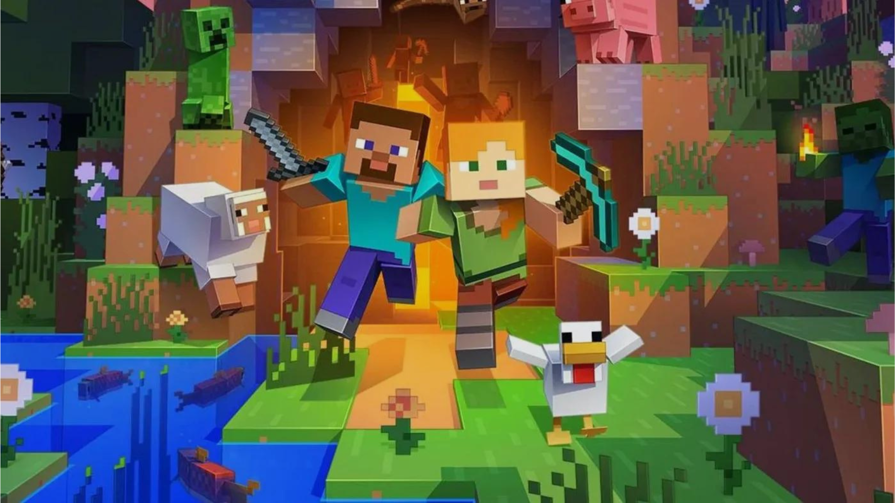
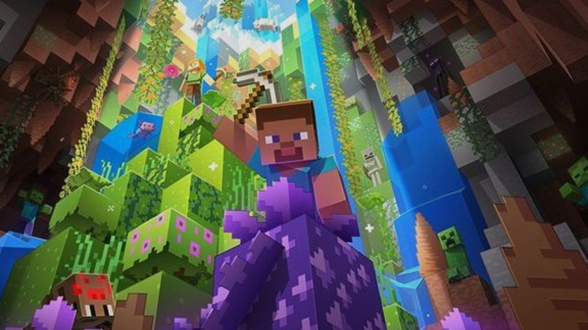
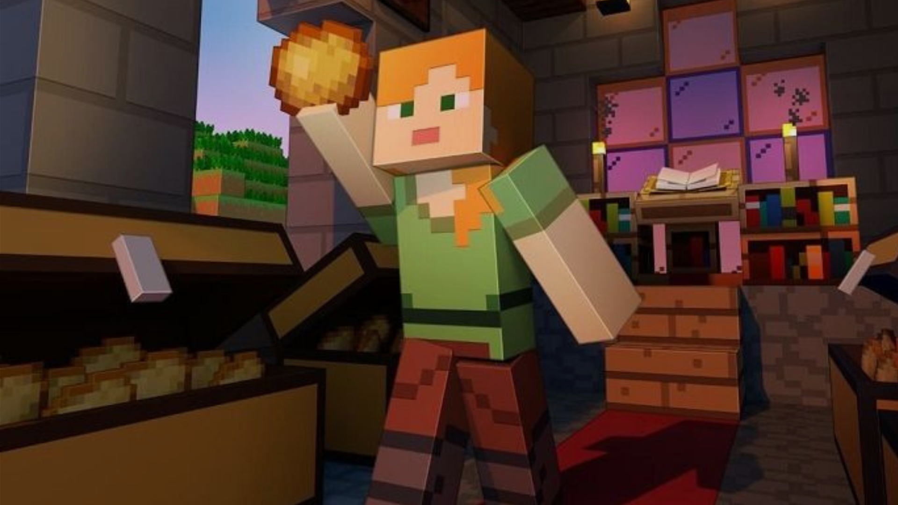
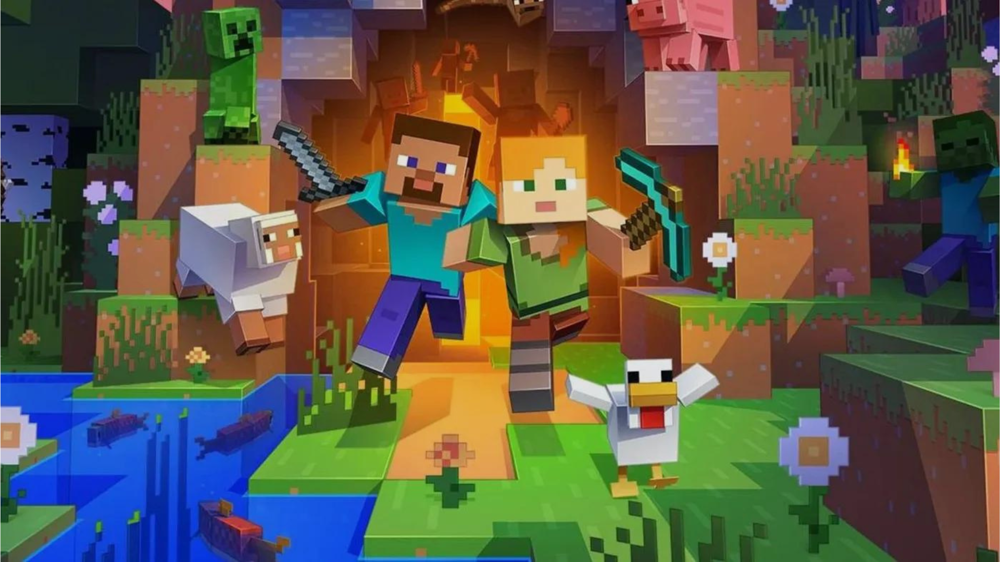
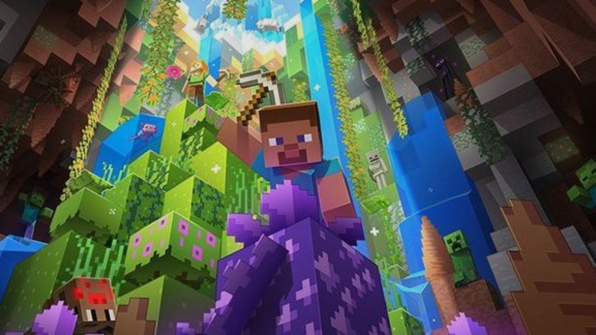
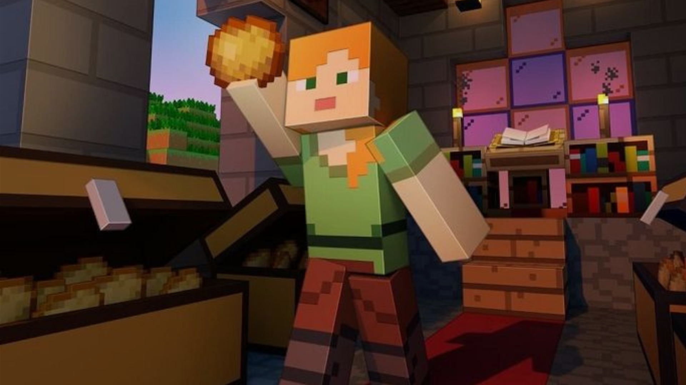

Minecraft é um jogo eletrônico, que tem por objetivo básico construir e quebrar blocos. O jogo foi criado pelo sueco Markus Persson, lançado em 2011, inicialmente para PC e posteriormente para outras plataformas como Playstation 3, Playstation 4, Xbox 360 e Xbox One. O principal objetivo do jogo é simplesmente construir. Você conta com uma série de ferramentas diferentes, que podem ser utilizadas tanto para coletar materiais quanto como armas. Ao coletar os blocos, o jogador tem a chance de utilizar seus recursos para construir o que bem entender.
Minecraft
R$:100,00
Requisitos mínimos; Sistema operacional: Windows 7, Mac OS X 10.9, Linux distribuição de 2014 ou mais recente Processador: Intel Core i3-3210 3.2 GHz ou AMD A8-7600 APU 3.1 GHz Memória RAM: 4GB Placa de vídeo: Intel Graphics 4000, NVidia GeForce 400 ou AMD Radeon R5 com Open GL 4.4 Armazenamento: pelo menos 1 GB de espaço disponível
DESENVOLVEDORA: Mojang Studios / CRíTICA: 93